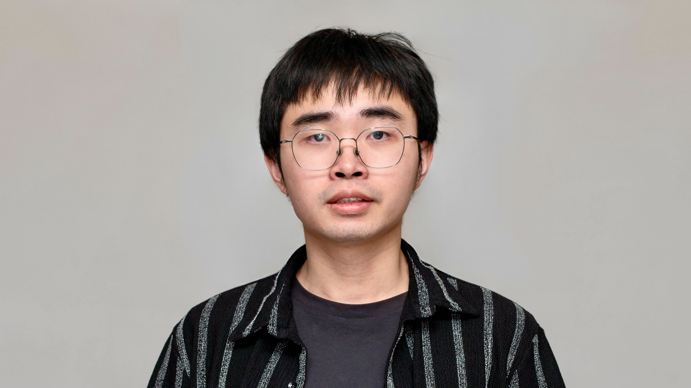

Fanjiang Ye|叶繁江
Ph.D. Student · Computer Science · Rice University

I am a Ph.D. student in Computer Science at Rice University, advised by Dr. Yuke Wang. Before that, I got my M.S. degree in Computer Science at Indiana University Bloomington, advised by Dr. Dingwen Tao. I obtained my B.S. degree from the Department of Physics at University of Science and Technology of China (USTC).
Research Interests
Fanjiang's research interests lie in system-level optimization of ML and GPU-based distributed computing, with a focus on Generative AI, LLM/Diffusion Model serving, efficient LLM inference, and communication compression and overlapping. His long-term goal is to enable fast, scalable, and resource-aware AI systems.
Publications
-
DUO: No Compromise to Accuracy Degradation
[Paper]
-
Model Steering: Learning with a Reference Model Improves Generalization Bounds and Scaling Laws
[Paper]
-
BMQSim: Overcoming Memory Constraints in Quantum Circuit Simulation with a High-Fidelity Compression Framework
[Paper]
-
High-performance Visual Semantics Compression for AI-Driven Science
[Paper]
-
Accelerating Communication in Deep Learning Recommendation Model Training with Dual-Level Adaptive Lossy Compression
[Paper]
Show 6 more preprints Show less
-
SUPERGEN: An Efficient Ultra-high-resolution Video Generation System with Sketching and Tiling
[Preprint]
-
TIDE: Text-Informed Dynamic Extrapolation with Step-Aware Temperature Control for Diffusion Transformers
[Preprint]
-
Teach to Fish, Not to Feed: Internalizing Retrieval for External Memory in Large Language Models
-
SDiT: Semantic Region-Adaptive for Diffusion Transformers
[Preprint]
-
An Efficient and Adaptive Watermark Detection System with Tile-based Error Correction
[Preprint]
-
FastCLIP: A Suite of Optimization Techniques to Accelerate CLIP Training with Limited Resources
[Preprint]
Education
Experience
Professional Services
Artifact Evaluation Committee
- MLSys'26 Artifact Evaluation Committee
- EuroSys'26 Fall Artifact Evaluation Committee
- ASPLOS'26 Summer Artifact Evaluation Committee
- PPoPP'26 Artifact Evaluation Committee
- ASPLOS'26 Spring Artifact Evaluation Committee
- SOSP'25 Artifact Evaluation Committee
Reviewer
- NeurIPS'26 Conference Reviewer
- ECCV'26 Conference Reviewer
- CVPR'26 Program Committee Reviewer
- QCE'24 Sub-Reviewer
Teaching
- ENGR-E 516: Cloud Computing, Spring 2025, Indiana University
- COMP 422/534: Parallel Computing, Spring 2026, Rice University
Miscellaneous
- I love to play basketball and led the department basketball team in varsity games.
- Photography is also my favourite.
- Sometimes I really enjoy going skiing.
{kind=link}
{kind=link}
{kind=link}
Last updated 2026-04-05